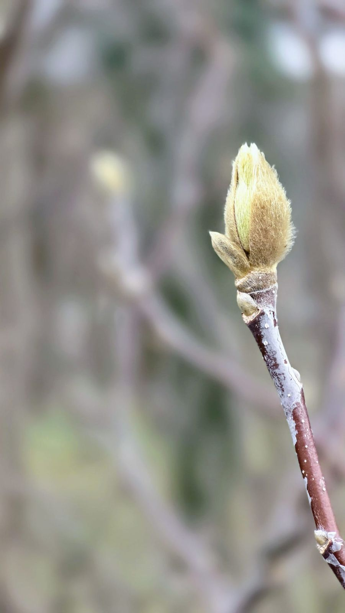

Journey 01 · Timișoara Note 10 of 11 Stories of
Stories of Romania: Baba Dochia
Stories of Baba Dochia
A fost odată ca niciodată – there was once an old lady, called Baba Dochia by one and all.
Now, sometimes the story is not about Baba Dochia at all, but Ileana Cosânzeana Dochia, the daughter of the Dacian King Decebalus, who fled into the Ceahlău Mountains to avoid marrying the Roman conqueror Trajan.

In her escape, she turned into a rock to escape slavery, and still today you can see her rock on the mountain side.
Sometimes the story is about her son, Dragobete, who was so pure and kind that he acted as a true officiant of weddings in the animal world. When Dragobete would come to the forest late each winter, animals would find their mates and birds would begin to build their nests. Girls in the villages would wash their face with unmelted snow to keep their complexion bright, and after church search for the first flowers of spring with the young men of the village, allowing the young men (and Dragobete!) to chase them back to town and steal kisses.
There are many stories here, all tangled together, and which is true and which is legend we may never know. But this story is about Baba Dochia, a proud, stubborn old woman who was punished for being cruel to others.
Baba Dochia was not a kindly old lady. She was wretched and cruel. When the townsfolk would see her, they would cross the road or disappear inside rather than be struck by her sharp tongue. “Ea caută mereu păr pe ou“, they would whisper when they saw her bickering in the market over prices. When a stranger would meet her on the road and say Bună ziua, if she was in a good mood, she would say “Esti varza“. If she was in a bad mood, she would tell them to “Plimba ursul!” If she was in a really bad mood…. well, I won’t be the one to repeat it.
Baba Dochia disliked everyone and most things. But there were two things that she cherished, and that was her herd of sheep and her son, Dragobete. She loved her herd of sheep because they always listened to her. She loved her son Dragobete, even though he did not listen to her hardly at all.
You see, Dragobete was a very handsome and kind boy and all who met him were impressed with his kindness. Dragobete would wandering from village to village to teach the youth the secrets of love. It is hard to believe that such a pleasant and kindly boy was the son of such a grump old woman, but it is true.
All was well in the happy and carefree youth of Dragobete when one day he fell in love with an equally kind and beautiful girl. Their love was so powerful, that they got married immediately. After marriage, Dragobete brought his bride to his mothers house to tell her the news.
Baba Dochia did not take the news of the marriage well. “Visezi cai verzi pe pereti,” Baba Dochia yelled at her son, “To think of marrying without my permission!”
She was furious that Dragobete would marry someone so unworthy, and so she was not kind to her daughter-in-law. Each day she would think of some new and difficult task for her to do, hoping she would run away. But no matter how bitter Baba Dochia was towards her, the young woman continued to be kind and obedient, accomplishing every task the old woman gave her. So, Baba Dochia decided to give one final cruel lesson to her new daughter-in-law in an attempt to get her to run away and never return. “I know what to do,” Baba Dochia thought craftily, “O voi pune să bată apa în fântână.“
So, on a cold winter day, Baba Dochia gave the girl an impossible task: Some stories say she told her to pick berries in the foothills of the mountain while it was still too cold for berries to grow. But this story says Baba Dochia gave her a ball of black wool and told her to go to the river.
“Wash this wool until it turns white,” she said to her daughter-in-law, “And don’t you dare return until the job is done or you will be punished and never see my son again!” The young girl realized that she was given an impossible task, but she still went, hoping for a miracle.
You see, her love for Dragobete was truly sincere, and the thought of never seeing him was unbearable, so she began to wash the wool in the frozen waters of the river. But, no matter how she scrubbed or how many times to dunked the wool into the river, the wool remained black. Her hands red and freezing, the young girl cried, unable to accomplish her impossible task.
When no more than three tear drops fell from her eyes, a strange man stepped out of the forest around her. “Please don’t cry,” he said to the young lady, touched by her grief, “Freci menta. Tell me what troubles you so much that I find you here in these woods full of sorrow.” So, the young lady told the stranger of her impossible task from Baba Dochia. Touched by her love for Dragobete and commitment to being an obedient daughter-in-law, the stranger gave her a beautiful red flower, saying “Bine faci, bine găsești. Place this red flower in the water, and your wool will turn white.”
Doing as the man instructed, the impossible becomes possible, and the girl is shocked when the wool turns white! But, when she turns to thank the stranger, she is alone in the river. Still, she gladly returns home to her love, with a basket of white wool.
But Baba Dochia, seeing the girl coming home from the woods, was very unhappy. “How dare you return without finishing your task!” Baba Dochia yelled at the girl. “But, Baba,” said the young lady, “I did as you told!”
“Bah!” said the old woman, “Nu vorbi cu lampa.”
“No, look!” insisted the young girl, presenting the white wool.
When Baba Dochia saw that the task was done, she demanded to know how the girl had accomplished it. “Încerci să-mi agăți tăiței de urechi?” The girl told Baba Dochia honestly that she had washed the wool in the river with a red flower to turn it white, presenting Baba Dochia with the flower as proof. Seeing the bright red flower, Baba Dochia believed that spring had already come.
As we have said, Baba Dochia was not a kind woman and her greed had the appetite of a wolf. So, her thoughts were not to share the news of spring, but to be the first one to take her sheep to the new spring grass on the mountain to eat their fill before anyone else in the village. So, she took twelve coats to wear and hurried her sheep up the path into the mountains.
As she climbed the mountains, the weather began to get warmer and warmer, and each day, she took off one coat, leaving it along the path. On the twelfth day, she dropped her last coat, convinced that the warm spring had truly come. But before too long, a cold wind started to blow and it began to snow. The cold wind seemed to whisper into her ear, perhaps in the voice of the stranger, saying, “Bine faci, bine găsești. Fă răul și vei găsi răul”. By the next morning, Baba Dochia and all her sheep were frozen solid.
It is said that as a warning to others, their frozen forms were turned to stone. And today, on the Bucegi Mountains, up on the plateau, there are some strange stone formations that, if you look closely enough, you can tell are Baba Dochia and her sheep, a warning against rushing into spring before it’s time.
Idioms Used:
Ea caută mereu păr pe ou – She always looks for hair on the egg To nitpick and find fault with everything
Esti varza – You are the cabbage An insult implying someone is stupid
Plimba ursul! – Walk the Bear! A somewhat polite invitation to **** off
Visezi cai verzi pe pereti – You dream of green horses on the walls. You must be crazy!
O voi pune să bată apa în fântână – I will make her beat the water in the well To waste time with a pointless task
Freci menta – Rub the mint To waste effort or time
Bine faci, bine găsești – Do good, receive good
Nu vorbi cu lampa – Don’t talk to the lamp To talk non-sense
Încerci să-mi agăți tăiței de urechi? – Are you trying to hang noodles on my ears? Are you trying to deceive me?
Fă răul și vei găsi răul – Do evil, receive evil
Originally published at fieldnotesfromabroad.com/2026/03/14/stories-of-romania-3/